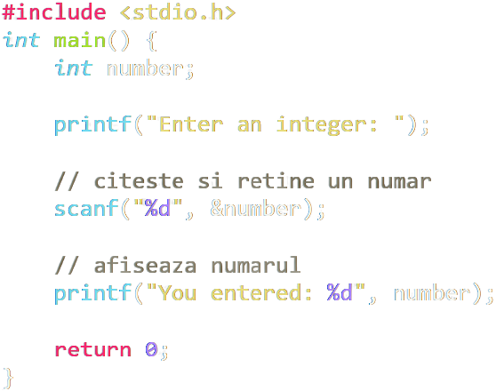
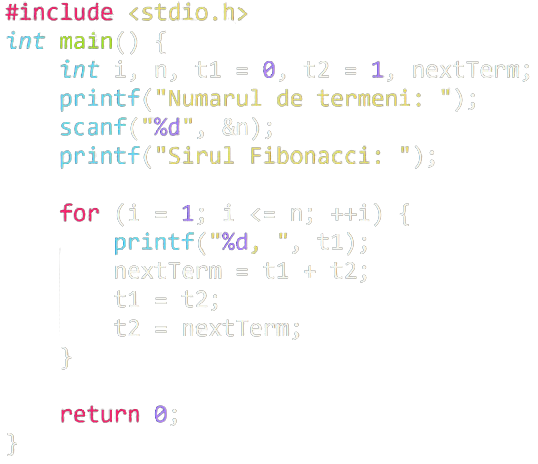
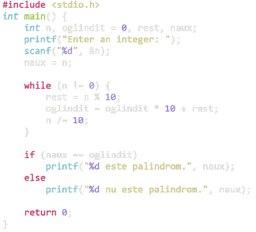

<body>
</body>
<html>
</html>
<h2>
</h2>
<p>
</p>
Exemple de cod C
Limbajul C
Limbajul C este un limbaj de programare orientat către structură,
la nivel mediu, utilizat în cea mai mare parte pentru a dezvolta
aplicații de nivel scăzut.
Cine îl folosește?
- Profesii și industrii:
- Dezvoltatori de software, ingineri de calculatoare,
analiști de afaceri și sisteme, administratori de conținut
IT și web, ingineri de software încorporați
-
Utilizat de angajatori în tehnologia informației, inginerie,
management, asistență medicală și servicii profesionale
- Organizații majore: Microsoft, Apple, Oracle, Cisco,
Raytheon
- Specializări și industrii în care se folosește
cel mai mult limbajul C: sisteme încorporate,
programare de sisteme,
inteligență artificială, automatizare industrială, grafică pe computer,
cercetare spațială, procesare de imagini și programare de jocuri
Ce face ca învățarea lui să fie importantă?
-
Limbajul C este utilizat pentru a dezvolta aplicații de sisteme care sunt
integrate în sisteme de operare precum Windows, UNIX și Linux, precum și
software-uri încorporate. Aplicațiile includ pachete grafice, procesoare de text,
foi de calcul, dezvoltare a sistemului de operare, sisteme de baze de date,
compilatoare și ansambluri, drivere de rețea și interpreți.
-
Sistemele TAO de la Facebook sunt programate în principal folosind limbajul C.
-
Majoritatea driverelor de dispozitiv sunt încă dezvoltate folosind limbajul C.
-
Caracteristici:
-
Simplu de învățat; există doar 32 de cuvinte cheie de stăpânit
-
Programe de sistem ușor de scris, cum ar fi compilatoare și interpreți
-
Limbaj de bază pentru începători
De unde a început?
Limbajul C a fost dezvoltat în 1972 la Bell Labs special pentru
implementarea sistemului UNIX. În cele din urmă a dat naștere multor
limbaje de programare avansate, inclusiv C ++, Java C #, JavaScript și Pearl.


